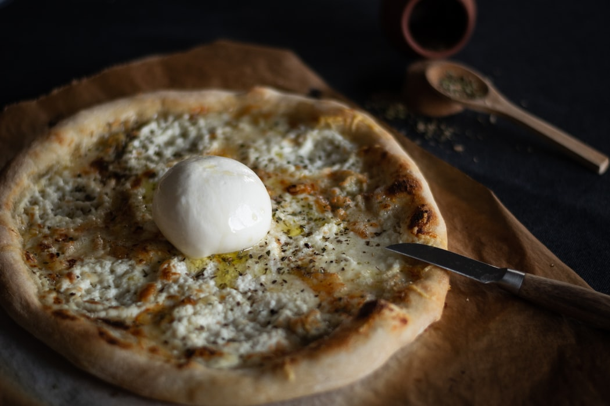

4 CHEESE
Ingredients:
- 1 cup warm water (100° to 110°), divided
- 10 ounces bread flour (about 2 cups plus 2 tablespoons)
- 1 package dry yeast (about 2 1/4 teaspoons)
- 7 teaspoons olive oil, divided
- ½ teaspoon kosher salt
- Cooking spray
- 1 tablespoon yellow cornmeal
- 2 tablespoons chopped garlic
- ⅓ cup (about 3 ounces) part-skim ricotta cheese (such as Calabro)
- 1 ¼ ounces taleggio cheese, thinly sliced
- ¼ cup (1 ounce) crumbled Gorgonzola cheese
- ¼ cup (1 ounce) finely grated Parmigiano-Reggiano cheese
- 2 tablespoons chopped fresh chives
